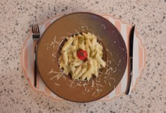
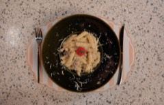
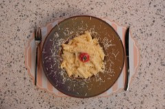
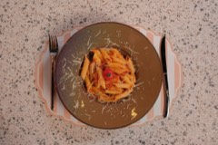

290 ₺Penne pesto
Pesto sos, krema, tulum peyniri.

320 ₺Penne Alfredo
Tavuk, mantar sos, krema, tulum peyniri.

310 ₺Penne üç peynirli
Mozzarella, cheddar, tulum peyniri, krema.

290 ₺Napoliten penne
Napoliten sos, tulum peyniri.